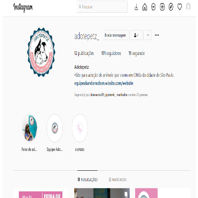
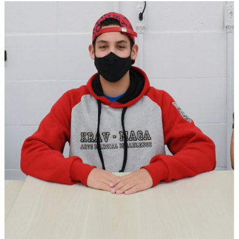

Um pouco sobre do meu projeto e da instituição que faço parte:
 Faço parte de uma instituição chamada Instituto Reciclar, que prepara os jovens para o mercado de trabalho, na área que o jovem deseja seguir para o seu futuro. Nessa instituição construi um projeto em parceria com a UNICEF e outras instituições, mas esse projeto que contrui, se chama AdotePetz, que tem o intuito de ajudar Ongs de animais a começarem a fazer adoções onlines.